주니어 진로카드

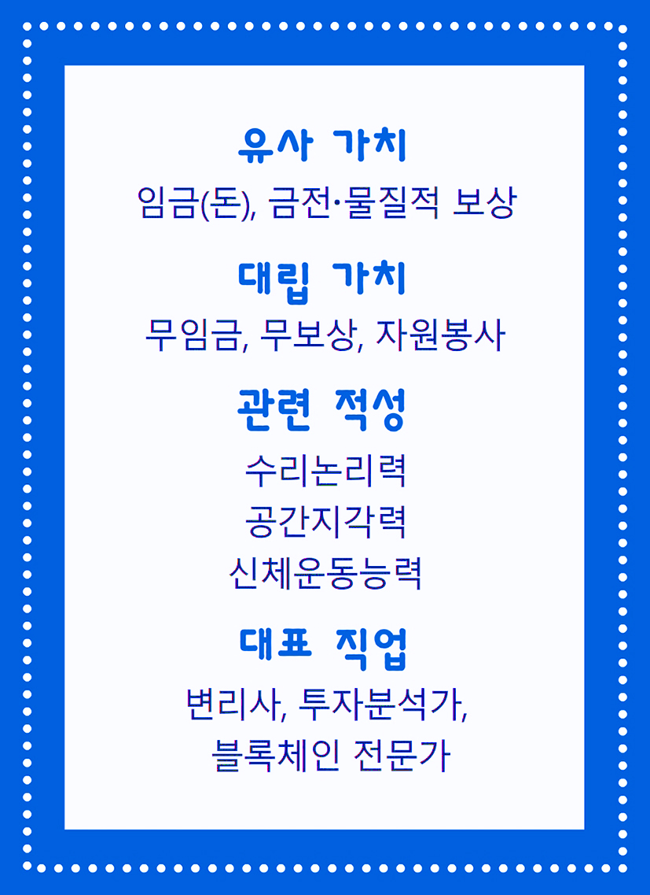
- 유사 가치 임금(돈), 금전·물질적 보상
- 대립 가치 무임금, 무보상, 자원봉사
- 관련 적성 수리논리력, 공간지각력, 신체운동 능력
- 대표 직업 변리사, 투자분석가, 블록체인 전문가
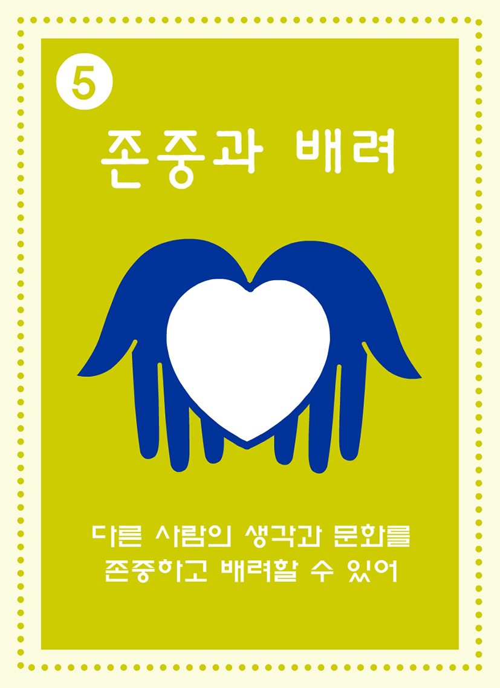
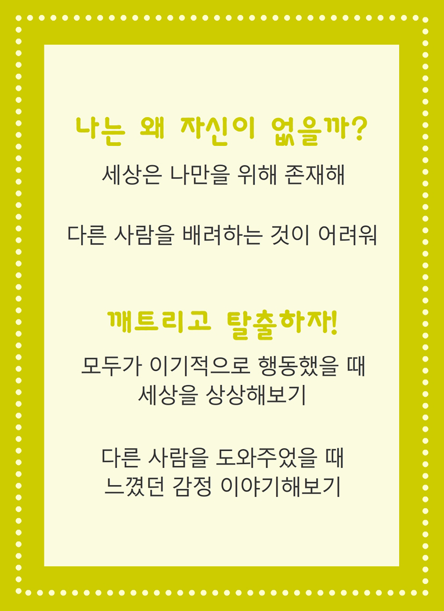
- 나는 왜 자신이 없을까? 세상은 나만을 위해 존재해, 다른 사람을 배려가흔 것이 어려워
- 깨트리고 탈출하자! 모두가 이기적으로 행동했을 때 세상을 상상해보기, 다른 사람을 도와주었을 때 느꼈던 감정 이야기 해보기
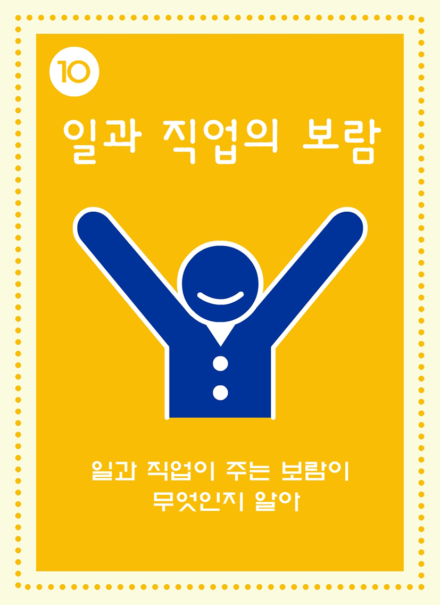
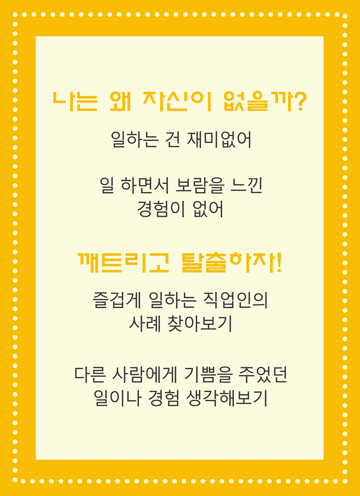
- 나는 왜 자신이 없을까? 일하는 건 재미 없어, 일하면서 보람을 니낀 경험이 없어
- 깨트리고 탈출하자! 즐겁게 일하는 직업인의 사례 찾아보기, 다른 사람에게 기쁨을 주었던 일이나 경험 생각해보기
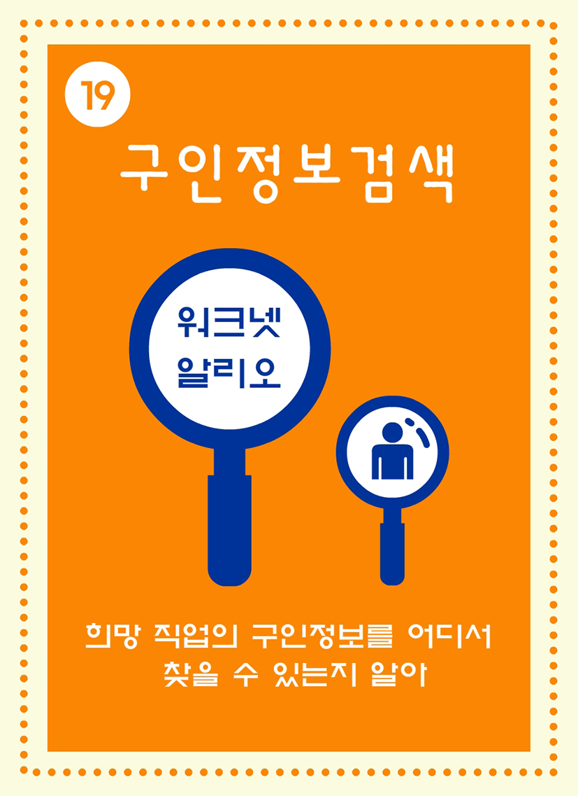
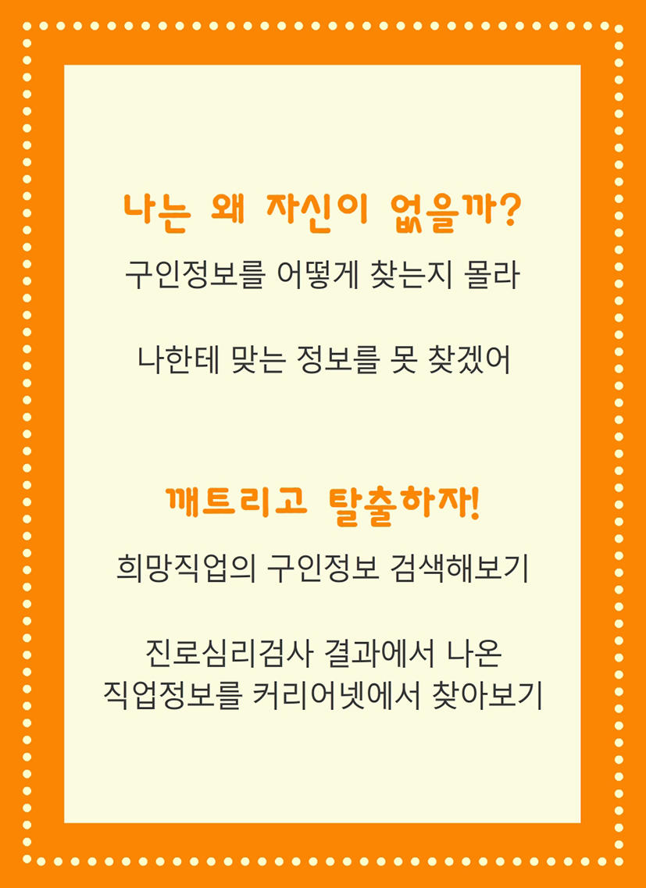
- 나는 왜 자신이 없을까? 구인정보를 어떻게 찾는지 몰라, 나한테 맞는 정보를 못 찾겠어
- 깨트리고 탈출하자! 진로심리검사 결과에서 나온 직업정보를 커리어넷에서 찾아보기
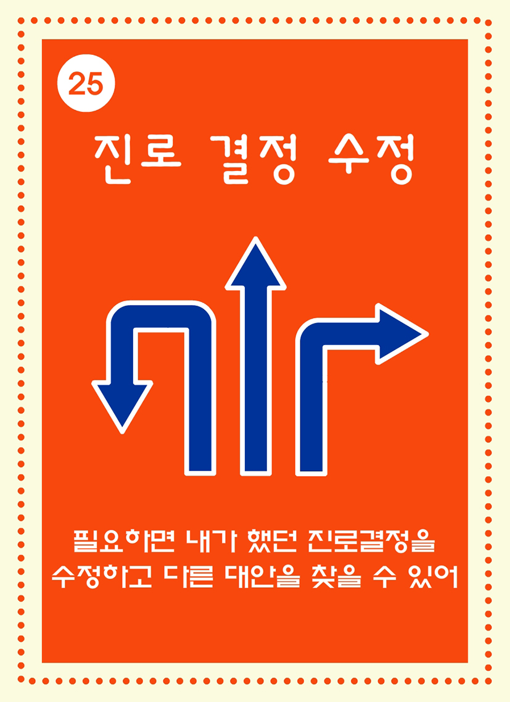
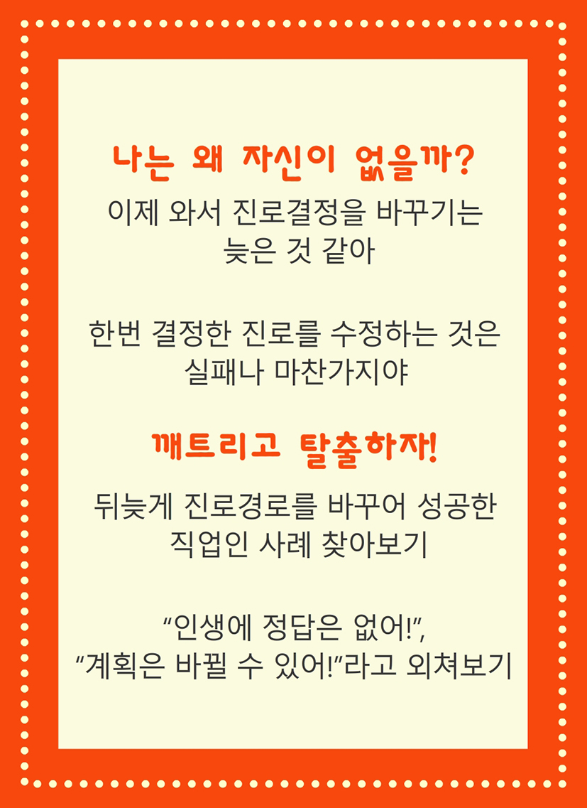
- 나는 왜 자신이 없을까? 이제 와서 진로결정을 바꾸기는 늦은 것 같아, 한번 결정한 진로를 수정하는 것은 실패나 마찬가지야
- 깨트리고 탈출하자! 뒤늦게 진로경로를 바꾸어서 성공한 직업인 사례 찾아보기, '인생에 정답은 없어!', '계획은 바뀔 수 있어~'라고 외쳐보기
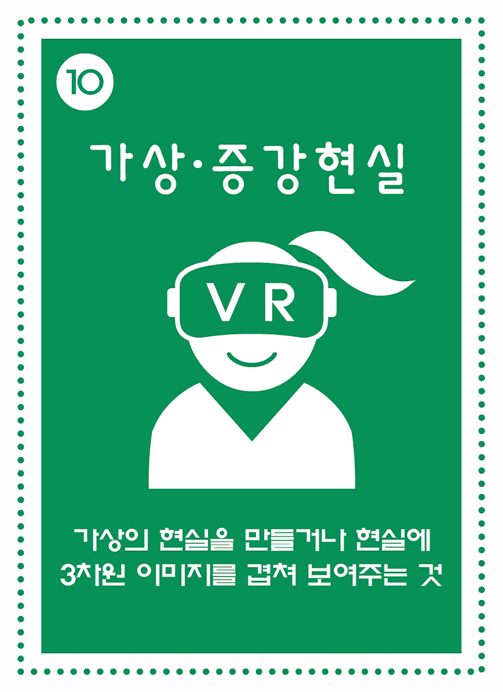
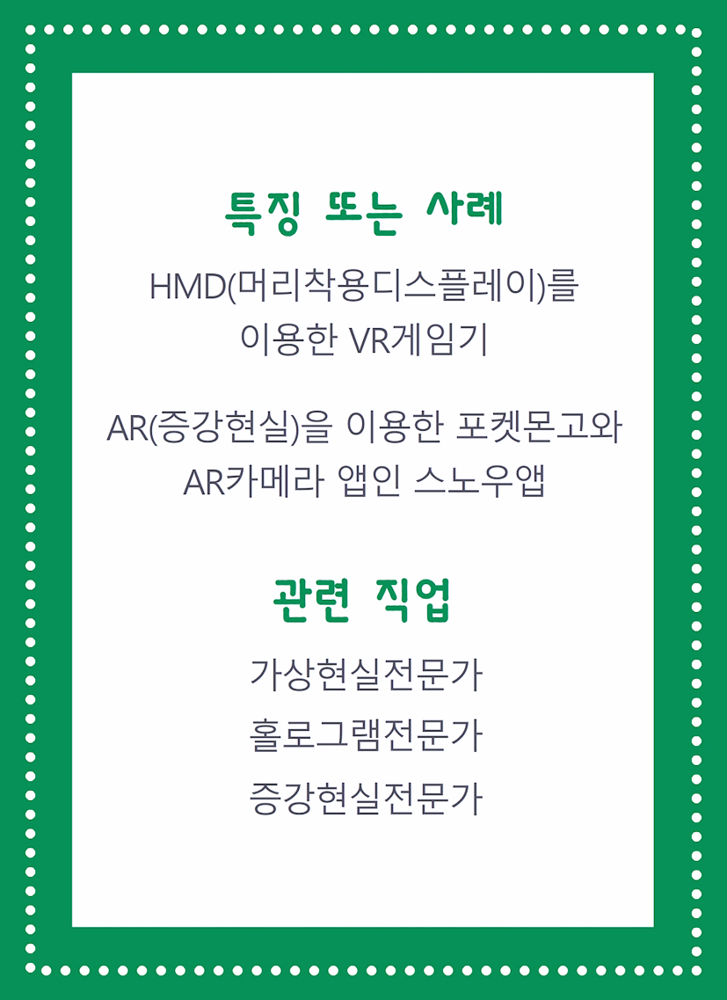
- 특징 또는 사례 HMD(모리착용디스플레이)를 이용한 VR게임기, AR(증강현실)을 이용한 포켓몬고와 AR카메라 앱인 스노우앱
- 관련 직업 가상현실전문가, 홀로그램전문가, 증강현실전문가